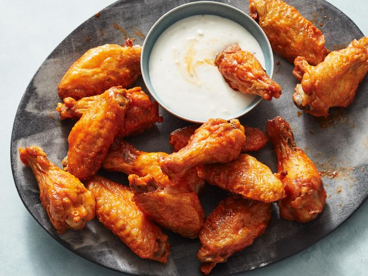

s1
Air Fried Chicken Wing Recipe

Description
Nothing is more satisfying than cooking up a batch of wings without deep
frying. These extra crispy wings only need a light coating of cooking spray on the air fryer basket. Then the magic happens: the air fryer’s fan and heating mechanism create a frenzy of forceful hot air that swirls down and around the wings, crisping up the skin to golden perfection (and without the added calories of frying oil)
Ingredients
- Nonstick cooking spray, for the basket
- 2 pounds chicken wings, split at the joint and tips removed
- Kosher salt
- 4 tablespoons unsalted butter
- 1/2 cup hot sauce, such as Frank's RedHot
- Ranch or blue cheese dressing, for serving
Steps
- Spray the basket of a 3.5-quart air fryer with cooking spray and set aside. Pat the chicken wings dry and sprinkle generously with salt. Place the wings in the fryer basket so they are not touching (if necessary to fit, line up the drumettes standing upright along the sides). Set the air fryer to 360 degrees F and cook for 12 minutes, then flip the wings with tongs and cook for 12 minutes more. Flip the wings again, increase the heat to 390 degrees F and cook until the outsides are extra-crispy, about 6 minutes more
- Meanwhile, warm the butter in a microwave-safe bowl in the microwave until melted, about 1 minute. Whisk in the hot sauce.
- Toss the wings with the butter mixture to coat in a large bowl and serve with dressing on the side.